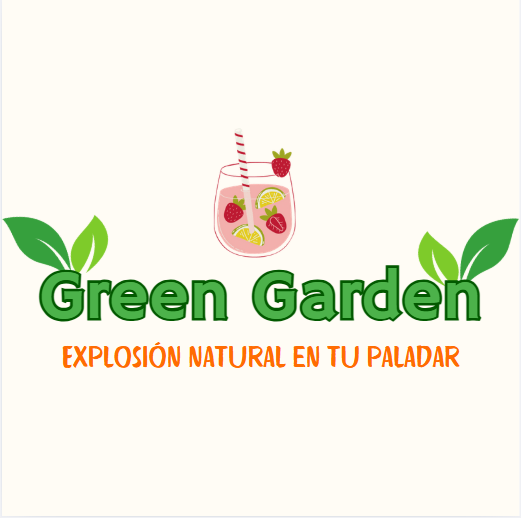

Historia de la empresa
"Green Garden" no era solo una empresa; era una misión. Cada miembro del equipo compartía
la creencia de que la naturaleza tenía el poder de nutrir, sanar y unir a las personas.
Inspirados por este ideal, comenzaron a experimentar con combinaciones únicas de frutas
y vegetales, buscando crear jugos no solo deliciosos, sino también llenos de energía y
vitalidad. La inspiración llegó de manera inesperada cuando, durante un paseo por el
jardín, uno de los fundadores notó cómo las abejas revoloteaban entre las flores de
guayaba y maracuyá. "¿Y si capturamos la esencia de esta armonía natural en un jugo?",
preguntó emocionado. Esa misma tarde, nació la receta del ahora icónico jugo "Harmony Blend"
(Mezcla de Armonía): una mezcla exquisita de guayaba, maracuyá y un toque de jengibre. Lo
que empezó como una pequeña empresa local se convirtió rápidamente en un fenómeno global.
"Green Garden" no solo ofrecía jugos, sino una invitación a reconectar con la naturaleza
en cada sorbo. Y así, el 3 de marzo de 2023 quedó grabado en la historia como el día
en que el jardín verde floreció en los corazones de las personas alrededor del mundo. |
 |